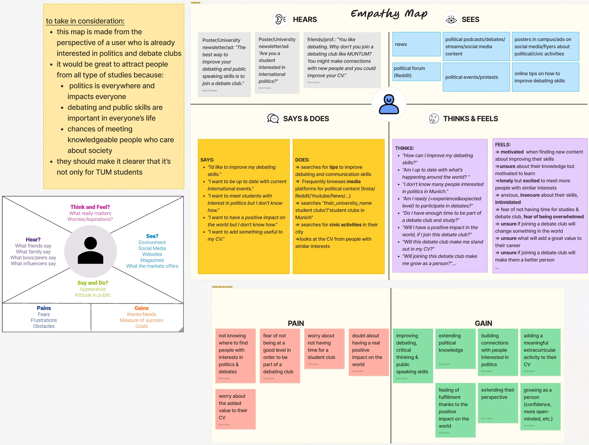

MUNTUM Debate Club Website-Redesign für einen Münchner Studierenden-Debattierclub
- Kontext
- Kundenprojekt für den MUNTUM Debate Club
- Jahr
- 2024
- Dauer
- 4 Monate
- Team
- TUDesign Studierendenclub
- Methoden
- Tools
Was ich gemacht habe
- Eine Website für unseren Kunden MUNTUM gemeinsam mit Mitgliedern des TUDesign Studierendenclubs in Figma gestaltet
- An UI/UX-Workshops und weiteren Veranstaltungen von TUDesign teilgenommen
Die Herausforderung
Die alte Website hatte ein veraltetes Design und keine klare Struktur, was Studierende, die sich bewerben wollten, verwirrte – und es gab keine mobile Version.
Die Lösung
Eine ausgereifte, professionellere Website, die mehr internationale Studierende in München für den Debattierclub gewinnen soll.


